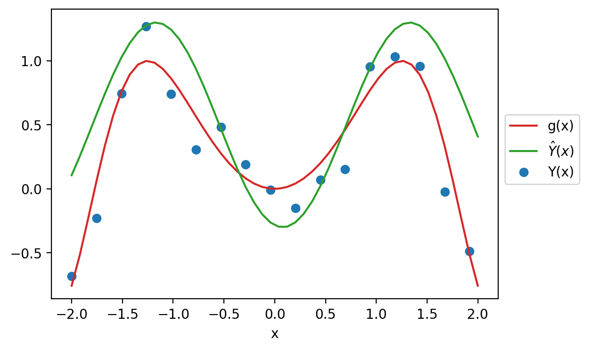
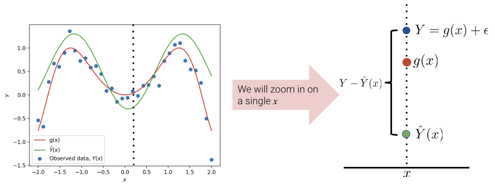
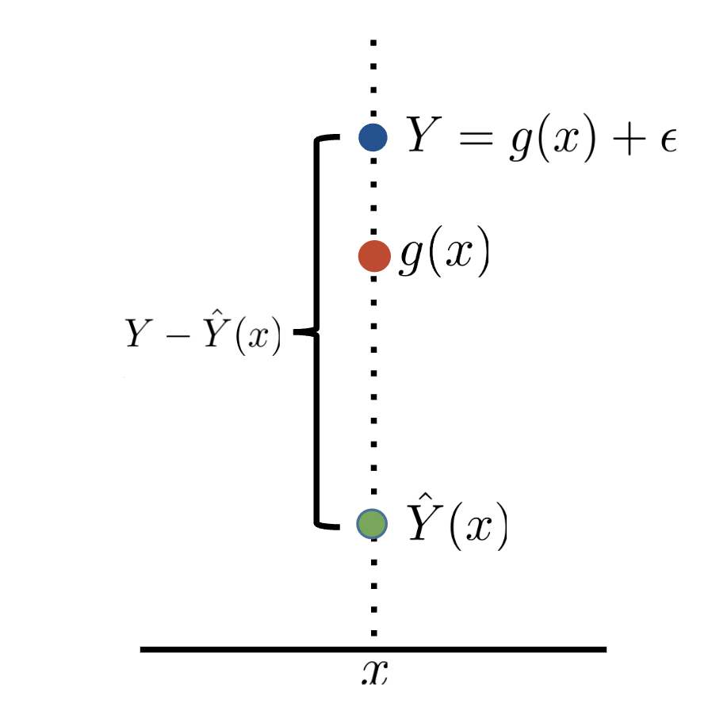
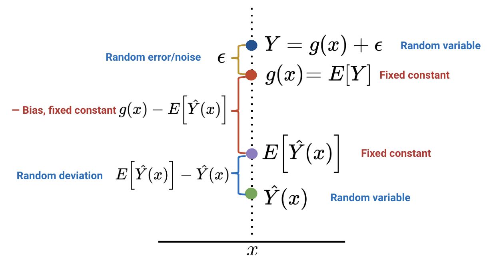

18 Estimators, Bias, and Variance
Last time, we introduced the idea of random variables: numerical functions of a sample. Most of our work in the last lecture was done to build a background in probability and statistics. Now that we’ve established some key ideas, we’re in a good place to apply what we’ve learned to our original goal – understanding how the randomness of a sample impacts the model design process.
In this lecture, we will delve more deeply into the idea of fitting a model to a sample. We’ll explore how to re-express our modeling process in terms of random variables and use this new understanding to steer model complexity.
18.1 Brief Recap
- Let \(X\) be a random variable with distribution \(P(X=x)\).
- \(\mathbb{E}[X] = \sum_{x} x P(X=x)\)
- \(\text{Var}(X) = \mathbb{E}[(X-\mathbb{E}[X])^2] = \mathbb{E}[X^2] - (\mathbb{E}[X])^2\)
- Let \(a\) and \(b\) be scalar values.
- \(\mathbb{E}[aX+b] = aE[\mathbb{X}] + b\)
- \(\text{Var}(aX+b) = a^2 \text{Var}(X)\)
- Let \(Y\) be another random variable.
- \(\mathbb{E}[X+Y] = \mathbb{E}[X] + \mathbb{E}[Y]\)
- \(\text{Var}(X + Y) = \text{Var}(X) + \text{Var}(Y) + 2\text{Cov}(X,Y)\)
Note that \(\text{Cov}(X,Y)\) would equal 0 if \(X\) and \(Y\) are independent.
There is also one more important property of expectation that we should look at. Let \(X\) and \(Y\) be independent random variables: \[ \mathbb{E}[XY] = \mathbb{E}[X]\mathbb{E}[Y] \]
18.2 Common Random Variables
There are several cases of random variables that appear often and have useful properties. Below are the ones we will explore further in this course. The numbers in parentheses are the parameters of a random variable, which are constants. Parameters define a random variable’s shape (i.e., distribution) and its values. For this lecture, we’ll focus more heavily on the bolded random variables and their special properties, but you should familiarize yourself with all the ones listed below:
- Bernoulli(\(p\))
- Takes on value 1 with probability \(p\), and 0 with probability \((1 - p)\).
- AKA the “indicator” random variable.
- Let \(X\) be a Bernoulli(\(p\)) random variable.
- \(\mathbb{E}[X] = 1 * p + 0 * (1-p) = p\)
- \(\mathbb{E}[X^2] = 1^2 * p + 0^2 * (1-p) = p\)
- \(\text{Var}(X) = \mathbb{E}[X^2] - (\mathbb{E}[X])^2 = p - p^2 = p(1-p)\)
- \(\mathbb{E}[X] = 1 * p + 0 * (1-p) = p\)
- Binomial(\(n\), \(p\))
- Number of 1s in \(n\) independent Bernoulli(\(p\)) trials.
- Let \(Y\) be a Binomial(\(n\), \(p\)) random variable.
- The distribution of \(Y\) is given by the binomial formula, and we can write \(Y = \sum_{i=1}^n X_i\) where:
- \(X_i\) s the indicator of success on trial i. \(X_i = 1\) if trial i is a success, else 0.
- All \(X_i\) are i.i.d. and Bernoulli(\(p\)).
- \(\mathbb{E}[Y] = \sum_{i=1}^n \mathbb{E}[X_i] = np\)
- \(\text{Var}(X) = \sum_{i=1}^n \text{Var}(X_i) = np(1-p)\)
- \(X_i\)’s are independent, so \(\text{Cov}(X_i, X_j) = 0\) for all i, j.
- The distribution of \(Y\) is given by the binomial formula, and we can write \(Y = \sum_{i=1}^n X_i\) where:
- Uniform on a finite set of values
- The probability of each value is \(\frac{1}{\text{(number of possible values)}}\).
- For example, a standard/fair die.
- Uniform on the unit interval (0, 1)
- Density is flat at 1 on (0, 1) and 0 elsewhere.
- Normal(\(\mu, \sigma^2\)), a.k.a Gaussian
- \(f(x) = \frac{1}{\sigma\sqrt{2\pi}} \exp\left( -\frac{1}{2}\left(\frac{x-\mu}{\sigma}\right)^{\!2}\,\right)\)
18.2.1 Properties of Bernoulli Random Variables
To get some practice with the formulas discussed so far, let’s derive the expectation and variance for a Bernoulli(\(p\)) random variable. If \(X\) ~ Bernoulli(\(p\)), \[\mathbb{E}[X] = 1 \cdot p + 0 \cdot (1 - p) = p\]
We will get an average value of p across many, many samples. To compute the variance, we will use the computational formula. We first find that: \[\mathbb{E}[X^2] = 1^2 \cdot p + 0^2 \cdot (1 - p) = p\]
From there, let’s calculate our variance: \[\text{Var}(X) = \mathbb{E}[X^2] - \mathbb{E}[X]^2 = p - p^2 = p(1-p)\]
Looking at this equation, we can see that we get a lower var at more extreme probabilities like p = 0.1 or 0.9, and we get a higher variance when p close to 0.5.
18.2.2 Properties of Binomial Random Variables
Let \(Y\) ~ Binomial(\(n\), \(p\)). We can think of \(Y\) as the number (i.e., count) of 1s in \(n\) independent Bernoulli(\(p\)) trials. Distribution of Y given by the binomial formula:
\[ \textbf{P}(Y=y) = \binom{n}{y} p^y (1-p)^{n-y}\]
We can write:
\[Y = \sum_{i=1}^n X_i\]
- \(X_i\) is the indicator of a success on trial \(i\). \(X_i\) = 1 if trial i is a success, else 0.
- All \(X_i\)s are i.i.d. (independent and identically distributed) and Bernoulli(p).
Using linearity of expectation,
\[\mathbb{E}[Y] = \sum_{i=1}^n \mathbb{E}[X_i] = np\]
For the variance, since each \(X_i\) is independent of the other, \(\text{Cov}(X_i, X_j) = 0\),
\[\text{Var}(Y) = \sum_{i=1}^n \text{Var}[X_i] = np(1-p)\]
18.2.3 Example
Suppose you win cash based on the number of heads you get in a series of 20 coin flips. Let \(X_i = 1\) if the \(i\)-th coin is heads, \(0\) otherwise. Which payout strategy would you choose?
A. \(Y_A = 10 * X_1 + 10 * X_2\)
B. \(Y_B = \sum_{i=1}^{20} X_i\)
C. \(Y_C = 20 * X_1\)
18.3 Sample Statistics
Today, we’ve talked extensively about populations; if we know the distribution of a random variable, we can reliably compute expectation, variance, functions of the random variable, etc. Note that:
- The distribution of a population describes how a random variable behaves across all individuals of interest.
- The distribution of a sample describes how a random variable behaves in a specific sample from the population.
In Data Science, however, we often do not have access to the whole population, so we don’t know its distribution. As such, we need to collect a sample and use its distribution to estimate or infer properties of the population. In cases like these, we can take several samples of size \(n\) from the population (an easy way to do this is using df.sample(n, replace=True)), and compute the mean of each sample. When sampling, we make the (big) assumption that we sample uniformly at random with replacement from the population; each observation in our sample is a random variable drawn i.i.d from our population distribution. Remember that our sample mean is a random variable since it depends on our randomly drawn sample! On the other hand, our population mean is simply a number (a fixed value).
18.3.1 Sample Mean Properties
Consider an i.i.d. sample \(X_1, X_2, ..., X_n\) drawn from a population with mean 𝜇 and SD 𝜎. We define the sample mean as \[\bar{X}_n = \frac{1}{n} \sum_{i=1}^n X_i\]
The expectation of the sample mean is given by: \[\begin{align} \mathbb{E}[\bar{X}_n] &= \frac{1}{n} \sum_{i=1}^n \mathbb{E}[X_i] \\ &= \frac{1}{n} (n \mu) \\ &= \mu \end{align}\]
The variance is given by: \[\begin{align} \text{Var}(\bar{X}_n) &= \frac{1}{n^2} \text{Var}( \sum_{i=1}^n X_i) \\ &= \frac{1}{n^2} \left( \sum_{i=1}^n \text{Var}(X_i) \right) \\ &= \frac{1}{n^2} (n \sigma^2) = \frac{\sigma^2}{n} \end{align}\]
The standard deviation is: \[ \text{SD}(\bar{X}_n) = \frac{\sigma}{\sqrt{n}} \]
\(\bar{X}_n\) is normally distributed (in the limit) by the Central Limit Theorem (CLT).
18.3.2 Central Limit Theorem
In Data 8 and in the previous lecture, you encountered the Central Limit Theorem (CLT). This is a powerful theorem for estimating the distribution of a population with mean \(\mu\) and standard deviation \(\sigma\) from a collection of smaller samples. The CLT tells us that if an i.i.d sample of size \(n\) is large, then the probability distribution of the sample mean is roughly normal with mean \(\mu\) and SD of \(\frac{\sigma}{\sqrt{n}}\). More generally, any theorem that provides the rough distribution of a statistic and doesn’t need the distribution of the population is valuable to data scientists! This is because we rarely know a lot about the population.

Importantly, the CLT assumes that each observation in our samples is drawn i.i.d from the distribution of the population. In addition, the CLT is accurate only when \(n\) is “large”, but what counts as a “large” sample size depends on the specific distribution. If a population is highly symmetric and unimodal, we could need as few as \(n=20\); if a population is very skewed, we need a larger \(n\). If in doubt, you can bootstrap the sample mean and see if the bootstrapped distribution is bell-shaped. Classes like Data 140 investigate this idea in great detail.
For a more in-depth demo, check out onlinestatbook.
18.3.3 Using the Sample Mean to Estimate the Population Mean
Now let’s say we want to use the sample mean to estimate the population mean, for example, the average height of Cal undergraduates. We can typically collect a single sample, which has just one average. However, what if we happened, by random chance, to draw a sample with a different mean or spread than that of the population? We might get a skewed view of how the population behaves (consider the extreme case where we happen to sample the exact same value \(n\) times!).

For example, notice the difference in variation between these two distributions that are different in sample size. The distribution with a bigger sample size (\(n=800\)) is tighter around the mean than the distribution with a smaller sample size (\(n=200\)). Try plugging in these values into the standard deviation equation for the sample mean to make sense of this!
Applying the CLT allows us to make sense of all of this and resolve this issue. By drawing many samples, we can consider how the sample distribution varies across multiple subsets of the data. This allows us to approximate the properties of the population without the need to survey every single member.
Given this potential variance, it is also important that we consider the average value and spread of all possible sample means, and what this means for how big \(n\) should be. For every sample size, the expected value of the sample mean is the population mean: \[\mathbb{E}[\bar{X}_n] = \mu\] We call the sample mean an unbiased estimator of the population mean and will explore this idea more in the next lecture.
18.4 Population vs Sample Statistics
At this point in the course, we’ve spent a great deal of time working with models. When we first introduced the idea of modeling a few weeks ago, we did so in the context of prediction: using models to make accurate predictions about unseen data. Another reason we might build models is to better understand complex phenomena in the world around us. Inference is the task of using a model to infer the true underlying relationships between the feature and response variables. For example, if we are working with a set of housing data, prediction might ask: given the attributes of a house, how much is it worth? Inference might ask: how much does having a local park impact the value of a house?
A major goal of inference is to draw conclusions about the full population of data given only a random sample. To do this, we aim to estimate the value of a parameter, which is a numerical function of the population (for example, the population mean \(\mu\)). We use a collected sample to construct a statistic, which is a numerical function of the random sample (for example, the sample mean \(\bar{X}_n\)). It’s helpful to think “p” for “parameter” and “population,” and “s” for “sample” and “statistic.”
Since the sample represents a random subset of the population, any statistic we generate will likely deviate from the true population parameter, and it could have been different. We say that the sample statistic is an estimator of the true population parameter. Notationally, the population parameter is typically called \(\theta\), while its estimator is denoted by \(\hat{\theta}\).
To address our inference question, we aim to construct estimators that closely estimate the value of the population parameter. We evaluate how “good” an estimator is by answering three questions:
- How close is our answer to the parameter? (Risk / MSE) \[ MSE(\hat{\theta}) = E[(\hat{\theta} - \theta)]^2\]
- Do we get the right answer for the parameter, on average? (Bias) \[\text{Bias}(\hat{\theta}) = E[\hat{\theta} - \theta] = E[\hat{\theta}] - \theta\]
- How variable is the answer? (Variance) \[Var(\hat{\theta}) = E[(\hat{\theta} - E[\hat{\theta}])^2] \]
If the Bias of an estimator \(\hat{theta}\) is zero, then it is said to be an unbiased estimator. For example, sample mean is unbiased for the population mean.
This relationship between bias and variance can be illustrated with an archery analogy. Imagine that the center of the target is the \(\theta\) and each arrow corresponds to a separate parameter estimate \(\hat{\theta}\)

Ideally, we want our estimator to have low bias and low variance, but how can we mathematically quantify that? See Section 18.5 for more detail.
18.4.1 Training and Prediction as Estimation
Now that we’ve established the idea of an estimator, let’s see how we can apply this learning to the modeling process. To do so, we’ll take a moment to formalize our data collection and models in the language of random variables.
Say we are working with an input variable, \(x\), and a response variable, \(Y\). We assume that \(Y\) and \(x\) are linked by some relationship \(g\); in other words, \(Y = g(x)\) where \(g\) represents some “universal truth” or “law of nature” that defines the true underlying relationship between \(x\) and \(Y\). In the image below, \(g\) is denoted by the red line.
As data scientists, however, we have no way of directly “seeing” the underlying relationship \(g\). The best we can do is collect observed data out in the real world to try to understand this relationship. Unfortunately, the data collection process will always have some inherent error (think of the randomness you might encounter when taking measurements in a scientific experiment). We say that each observation comes with some random error or noise term, \(\epsilon\) (read: “epsilon”). This error is assumed to be a random variable with expectation \(\mathbb{E}(\epsilon)=0\), variance \(\text{Var}(\epsilon) = \sigma^2\), and be i.i.d. across each observation. The existence of this random noise means that our observations, \(Y(x)\), are random variables, where \(Y = g(x) + \epsilon\). This can be seen on our graph because the points do not line perfectly with the true underlying relationship, and the residual is the noise \(\epsilon\).

We can only observe our IID random sample of data, represented by the blue points above. From this sample, we want to estimate the true relationship \(g\). We do this by training a model on the data to obtain our optimal \(\hat{\theta}\), \[ {\hat{\theta}} = \text{arg}\underset{\theta}{\text{min}}\ \left(\frac{1}{n} \sum_{i=1}^n \textbf{Loss}(Y_i, f_{\theta}(X_i))\right) + \lambda\ \textbf{Regularizer}(\theta)\]
and predicting the value of \(Y\) at a given \(x\) location, \[ \hat{Y}(x) = f_{\hat{\theta}}(x)\]
where the model \(\hat{Y}(x)\) can be used to estimate \(g\). The error in our prediction is: \[ (Y-\hat{Y}(x))^2\]
Here, \(X_i\), \(Y_i\), \(\hat{\theta}\), and \(\hat{Y}(x)\) are random variables. An example prediction model \(\hat{Y}(x)\) is shown below.
\[\text{True relationship: } g(x)\]
\[\text{Observed relationship: }Y = g(x) + \epsilon\]
\[\text{Prediction: }\hat{Y}(x) = f_{\hat{\theta}}(x)\]

When building models, it is also important to note that our choice of features will also significantly impact our estimation. In the plot below, you can see how the different models (green and purple) can lead to different estimates.

Overall, we fit (train) a model based on our sample of (x,y) pairs, and our model estimates the true relationship \(Y=g(x)+\epsilon\), where at every \(x\), our prediction for \(Y\) is \(\hat{Y}(x) = f_{\hat{\theta}}(x)\).
18.5 Bias-Variance Tradeoff
Recall the model and the data we generated from that model in the last section:
\[\text{True relationship: } g(x)\]
\[\text{Observed relationship: }Y = g(x) + \epsilon\]
\[\text{Prediction: }\hat{Y}(x)\]
With this reformulated modeling goal, we can now revisit the Bias-Variance Tradeoff from two lectures ago (shown below):

In today’s lecture, we’ll explore a more mathematical version of the graph you see above by introducing the terms model risk, observation variance, model bias, and model variance. Eventually, we’ll work our way up to an updated version of the Bias-Variance Tradeoff graph that you see below

18.5.1 Model Risk
Recall the data-generating process we established earlier. There is a true underlying relationship \(g\), observed data (with random noise) \(Y\), and model \(\hat{Y}\).

To begin to understand model risk, we’ll zoom in on a single data point in the plot above and look at its residual.

Model risk is defined as the mean square prediction error of the random variable \(\hat{Y}\). It is an expectation across all possible samples we could have possibly gotten when fitting the model, which we can denote as random variables \(X_1, X_2, \ldots, X_n, Y\). Model risk considers the model’s performance on any sample that is theoretically possible, rather than the specific data that we have collected.
\[\text{model risk }=\mathbb{E}\left[(Y-\hat{Y}(x))^2\right]\]
What is the origin of the error encoded by model risk? Note that there are three types of errors:
- Chance errors: happen due to randomness alone
- Source 1 (Observation Variance): randomness in new observations \(Y\) due to random noise \(\epsilon\)
- Source 2 (Model Variance): randomness in the sample we used to train the models, as samples \(X_1, X_2, \ldots, X_n, Y\) are random
- Bias: non-random error due to our model being different from the true underlying function \(g\)
Remember that \(\hat{Y}(x)\) is a random variable – it is the prediction made for \(x\) after being fit on the specific sample used for training. If we had used a different sample for training, a different prediction might have been made for this value of \(x\). To capture this, the diagram below considers both the prediction \(\hat{Y}(x)\) made for a particular random training sample, and the expected prediction across all possible training samples, \(E[\hat{Y}(x)]\).
We can use this simplified diagram to break down the prediction error into smaller components. First, start by considering the error on a single prediction, \(Y(x)-\hat{Y}(x)\).

We can identify three components of this error. Note that these points could be in any sequence, but this analysis would still work. This is just a convenient way to visualize it.

That is, the error can be written as:
\[Y-\hat{Y}(x) = \epsilon + \left(g(x)-\mathbb{E}\left[\hat{Y}(x)\right]\right) + \left(\mathbb{E}\left[\hat{Y}(x)\right] - \hat{Y}(x)\right)\] \[\newline \]
The model risk is the expected square of the expression above, \(\mathbb{E}\left[(Y(x)-\hat{Y}(x))^2\right]\). If we square both sides and then take the expectation, we will get the following decomposition of model risk:
\[\mathbb{E}\left[(Y-\hat{Y}(x))^2\right] = \mathbb{E}[\epsilon^2] + \left(g(x)-\mathbb{E}\left[\hat{Y}(x)\right]\right)^2 + \mathbb{E}\left[\left(\mathbb{E}\left[\hat{Y}(x)\right] - \hat{Y}(x)\right)^2\right]\]
It looks like we are missing some cross-product terms when squaring the right-hand side, but it turns out that all of those cross-product terms are zero. The detailed derivation is included in the “Proof of the Decomposition” section of this note for your reference.
This expression may look complicated at first glance, but we’ve actually already defined each term earlier in this lecture! Let’s look at them term by term.
18.5.2 1. Observation Variance
The first term in the above decomposition is \(\mathbb{E}[\epsilon^2]\). Remember \(\epsilon\) is the random noise when observing \(Y\), with expectation \(\mathbb{E}(\epsilon)=0\) and variance \(\text{Var}(\epsilon) = \sigma^2\). We can show that \(\mathbb{E}[\epsilon^2]\) is the variance of \(\epsilon\): \[ \begin{align*} \text{Var}(\epsilon) &= \mathbb{E}[\epsilon^2] + \left(\mathbb{E}[\epsilon]\right)^2\\ &= \mathbb{E}[\epsilon^2] + 0^2\\ &= \sigma^2. \end{align*} \]
This term describes how variable the random error \(\epsilon\) (and \(Y\)) is for each observation. This is called the observation variance. It exists due to the randomness in our observations \(Y\). It is a form of chance error we talked about in the Sampling lecture.
\[\text{observation variance} = \text{Var}(\epsilon) = \sigma^2.\]
The observation variance results from measurement errors when observing data or missing information that acts like noise. To reduce this observation variance, we could try to get more precise measurements, but it is often beyond the control of data scientists. Because of this, the observation variance \(\sigma^2\) is sometimes called “irreducible error.”
18.5.3 2. Model Variance
We will then look at the last term: \(\mathbb{E}\left[\left(\mathbb{E}\left[\hat{Y}(x)\right] - \hat{Y}(x)\right)^2\right]\). If you recall the definition of variance from the last lecture, this is precisely \(\text{Var}(\hat{Y}(x))\). We call this the model variance.
It describes how much the prediction \(\hat{Y}(x)\) tends to vary when we fit the model on different samples. Remember the sample we collect can come out very differently, thus the prediction \(\hat{Y}(x)\) will also be different. The model variance describes this variability due to the randomness in our sampling process. Like observation variance, it is also a form of chance error—even though the sources of randomness are different.
\[\text{model variance} = \text{Var}(\hat{Y}(x)) = \mathbb{E}\left[\left(\hat{Y}(x) - \mathbb{E}\left[\hat{Y}(x)\right]\right)^2\right]\]
The main reason for the large model variance is because of overfitting: we paid too much attention to the details in our sample that small differences in our random sample lead to large differences in the fitted model. To remedy this, we try to reduce model complexity (e.g. take out some features and limit the magnitude of estimated model coefficients) and not fit our model on the noises.
18.5.4 3. Model Bias
Finally, the second term is \(\left(g(x)-\mathbb{E}\left[\hat{Y}(x)\right]\right)^2\). What is this? The term \(g(x) - \mathbb{E}\left[\hat{Y}(x)\right]\) is called the model bias.
Remember that \(g(x)\) is the fixed underlying truth and \(\hat{Y}(x)\) is our fitted model, which is random. Model bias therefore measures how far off \(g(x)\) and \(\hat{Y}(x)\) are on average over all possible samples.
\[\text{model bias} = \mathbb{E}\left[g(x) - \hat{Y}(x)\right] = g(x) - \mathbb{E}\left[\hat{Y}(x)\right]\]
The model bias is not random; it is computed for the expected prediction (averaged over all possible training datasets). If bias is positive, our model tends to underestimate \(g(x)\) at this \(x\) value; if it’s negative, our model tends to overestimate \(g(x)\) at this \(x\) value. And if it’s 0, we can say that our model is unbiased.
The main reason for large model biases is underfitting:
- Over regularized: our model is too simple for the data and has insufficient complexity
- Not optimizing loss adequately
To fix this, we increase model complexity (but we don’t want to overfit!) or consult domain experts to see which models make sense. You can start to see a tradeoff here: if we increase model complexity, we decrease the model bias, but we also risk increasing the model variance.
18.5.5 Proof of the Decomposition
This section walks through the detailed derivation of the Bias-Variance Decomposition in the model risk section above.
18.5.11 The Decomposition
To summarize:
- The model risk, \(\mathbb{E}\left[(Y(x)-\hat{Y}(x))^2\right]\), is the mean squared prediction error of the model. It is an expectation and is therefore a fixed number (for a given x).
- The observation variance, \(\sigma^2\), is the variance of the random noise in the observations. It describes how variable the random error \(\epsilon\) is for each observation and cannot be addressed by modeling.
- The model bias, \(g(x) - \mathbb{E}\left[\hat{Y}(x)\right]\), is how “off” the \(\hat{Y}(x)\) is as an estimator of the true underlying relationship \(g(x)\).
- The model variance, \(\text{Var}(\hat{Y}(x))\), describes how much the prediction \(\hat{Y}(x)\) tends to vary when we fit the model on different samples.
The above definitions enable us to simplify the decomposition of model risk before as:
\[ \mathbb{E}\left[\left(Y - \hat{Y}(x)\right)^2\right] = \sigma^2 + \left(g(x) - \mathbb{E}[\hat{Y}(x)]\right)^2 + \text{Var}\left(\hat{Y}(x)\right) \] \[\text{model risk } = \text{observation variance} + (\text{model bias})^2 \text{+ model variance}\]
This is known as the bias-variance tradeoff. What does it mean? Remember that the model risk is a measure of the model’s performance. Our goal in building models is to keep model risk low; this means that we will want to ensure that each component of model risk is kept at a small value.
Observation variance is an inherent, random part of the data collection process. We aren’t able to reduce the observation variance, so we’ll focus our attention on the model bias and model variance.
In the Feature Engineering lecture, we considered the issue of overfitting.
To decrease model bias, we increase model complexity and the model will to make predictions that are closer to the true relationship \(g\), but if we design a highly complex model, the model can overfit the sample data and will have higher model variance. Small differences in the random samples used for training could lead to large differences in the fitted model.
To decrease model variance, we decrease model complexity. As a result, the model underfits the sample data and will have higher model bias.
We need to strike a balance. Our goal in model creation is to use a complexity level that is high enough to keep bias low, but not so high that model variance is large.